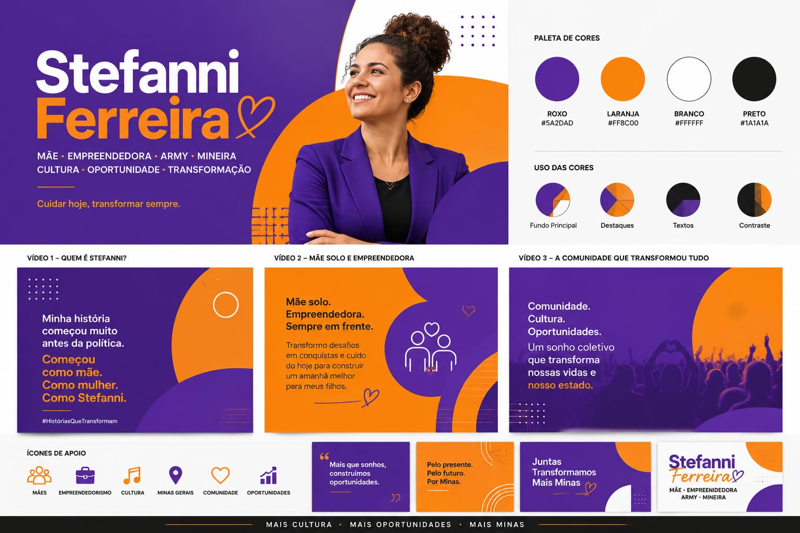

Família e cuidado
Apoio a famílias e maternidades, com propostas descritas por evidências e competência pública.
MÃE SOLO · EMPREENDEDORA · ARMY · MINEIRA
Uma trajetória feita de trabalho, cuidado e compromisso com comunidades que querem oportunidades reais.
Pré-campanha · conteúdo sujeito à validação jurídica e aprovação da equipe.

Uma história antes da política
Steffanni Ferreira se apresenta como mãe solo, empreendedora, integrante da Army e mineira. Sua comunicação parte de experiências de cuidado, trabalho e construção de oportunidades.
Biografia completa, trajetória profissional e comprovações: aguardando texto oficial aprovado.
Ideias que viram ação
Apoio a famílias e maternidades, com propostas descritas por evidências e competência pública.
Fortalecimento de mulheres empreendedoras e acesso a oportunidades de geração de renda.
Cultura como espaço de comunidade, trabalho, pertencimento e desenvolvimento local.
Metas públicas, fontes verificáveis e acompanhamento do que for assumido.
Cada prioridade será publicada com fontes, competência estadual, prazo e indicador após validação técnica.
Escuta pública
Os próximos encontros serão divulgados pelos canais oficiais após confirmação de local, data e acessibilidade.
Contato voluntário
Envie seus dados somente se quiser receber atualizações. Você poderá sair a qualquer momento.